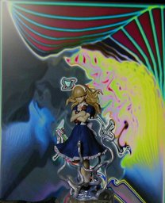
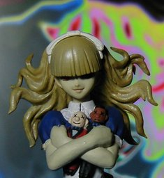

メガテン 第三集 アリス


コトブキヤ 真・女神転生 悪魔召喚録 第三集のアリスです。このゲームはやったことがないのですが、アリスで検索したときに見たこのフィギュアの画像に惹かれ購入しました。高さは10cm ぐらいです。 オドロオドロしい雰囲気ですが、どうみてもミセスには見えないのでミス・カオスとでも呼ぶべきなのでしょうか？そのまんま間違ってんのがイイ感ジです。そういう雰囲気でホラーマンガっぽいイメージになるよう背景を合わせてみました。 背景は今回も Winamp の MilkDrop プラグインを WinShot したものですが、アレンジは GIMP でなく FunFunFilter を使いました。私には扱いが難しかったので、WinShot した全画面にフィルタをかけて気に入ったものを使いました。ただ、そういう使い方をするものではなさそうなので、今度からは、また、GIMP を使うことになると思います。 更新：2006-05-05 初公開：2006年05月05日 18:03:35 最新版：2006年05月05日 18:10:37 Links: 真・女神転生 悪魔召喚録 第三集: http://www.kotobukiya.co.jp/kotobukiyashop/detail.msp?id=4140 MilkDrop: http://www.milkdrop.co.uk/ WinShot: http://www.woodybells.com/winshot.html FunFunFilter: http://www.fureai-net.tv/fujimaro_img/